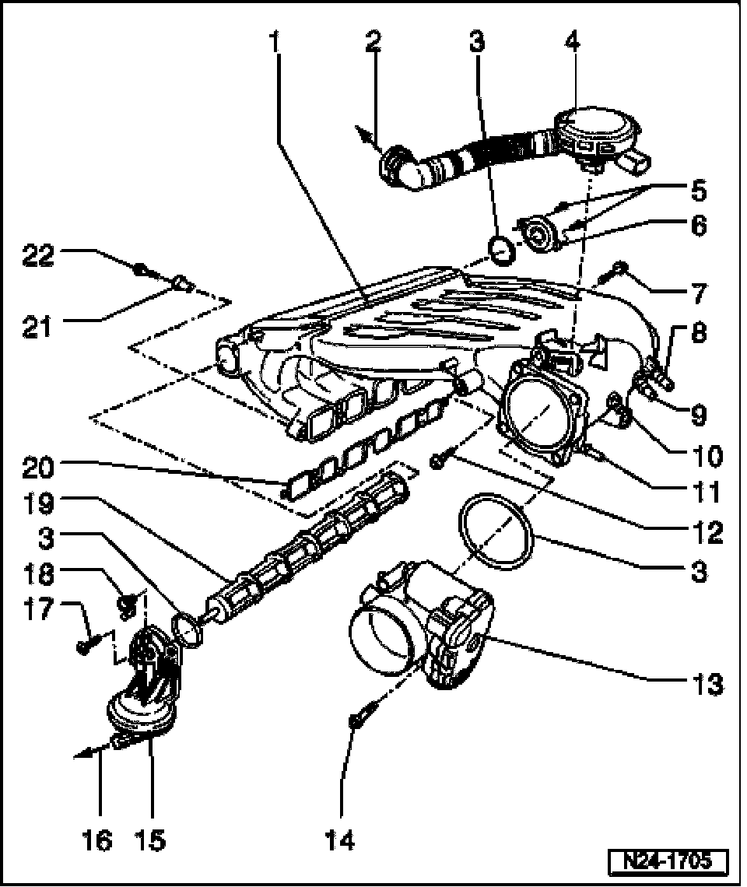

Electronic Throttle Control Module: Locations
Intake Manifold Change-over, Disassembling And Assembling

1 Intake manifold change-over
2 To cylinder head cover
3 Seal
- Always replace
4 Crankcase vent valve
- With Positive Crankcase Ventilation (PCV) heating element -N79-
5 5 Nm
6 Bearing caps
- For change-over roller of intake manifold change-over
7 23 Nm
8 Vacuum connection
- For brake booster and Brake System Vacuum Pump -V192- in vehicles with autom. transmission
9 Vacuum connection
- From Leak Detection Pump (LDP) -V144-, item 6
10 Vacuum connection
- From Secondary Air Injection (AIR) Solenoid Valve -N112- and
11 Intake Manifold Change-Over Valve -N156-, item 9 Vacuum connection
- From Evaporative Emission (EVAP) Canister Purge Regulator Valve -N80-, item 15
12 23 Nm
13 Throttle Valve Control Module-J338-*
- Terminals of sensor and connector are gold-plated
- 6-pin connector
14 10 Nm
15 Vacuum actuator
- For intake manifold change-over
16 To Intake Manifold Change-Over Valve -N156-
- item 11
17 5 Nm
18 Control lever
- For change-over roller
- Check for secure seating
19 Change-over roller
20 Gasket
- Note installed position
- Replace if damaged
21 Bushing
- For intake manifold mount
- For attaching seal
22 13 Nm.